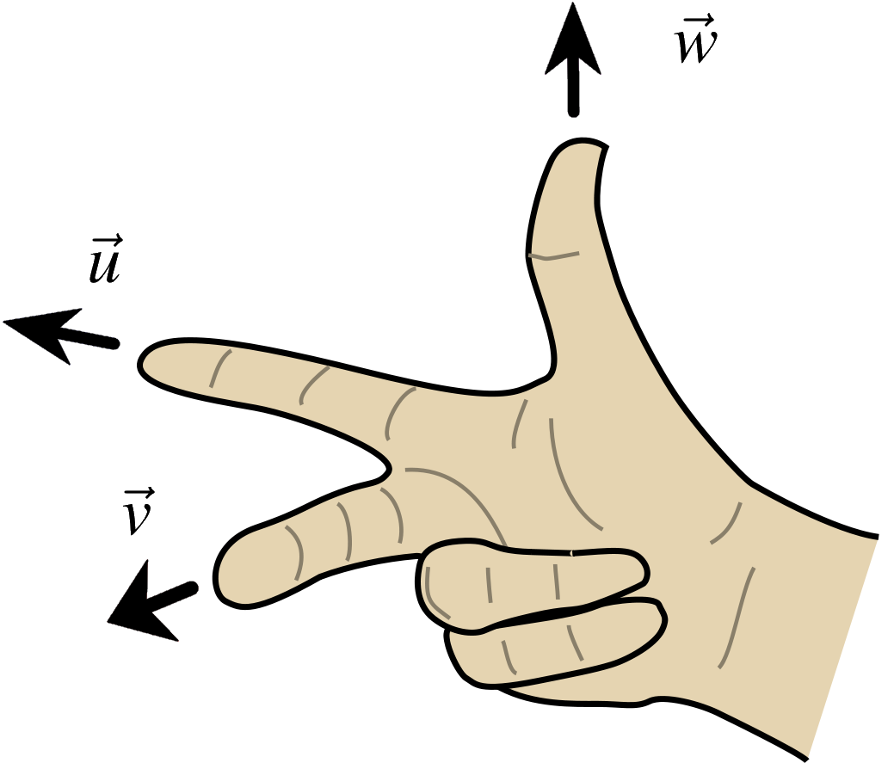
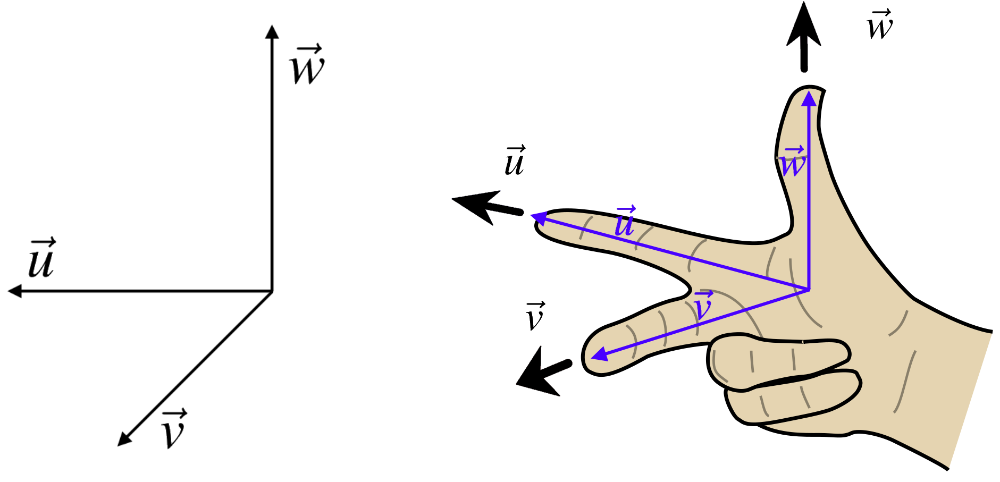
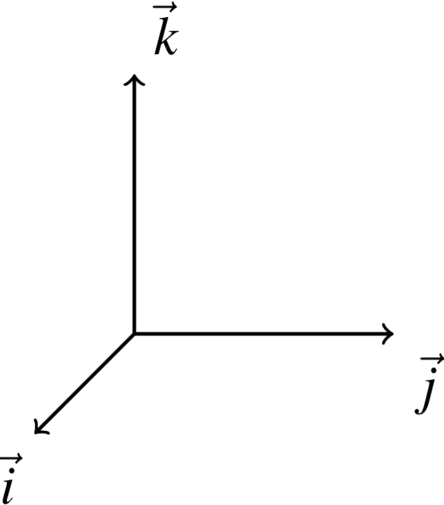
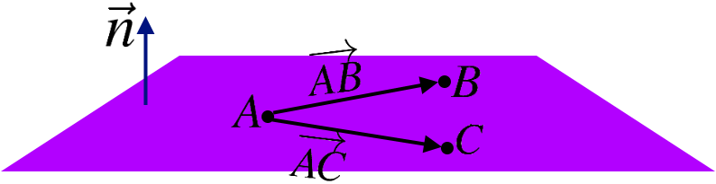
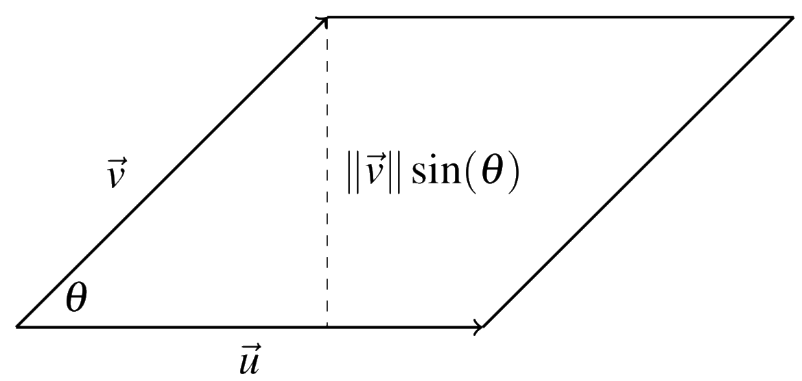
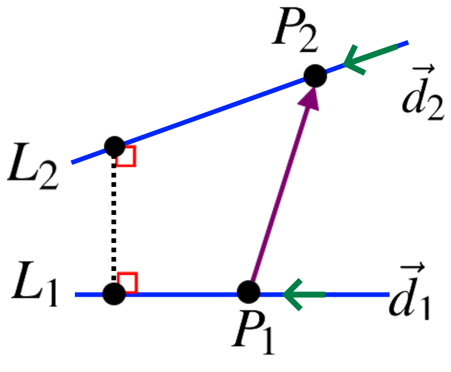
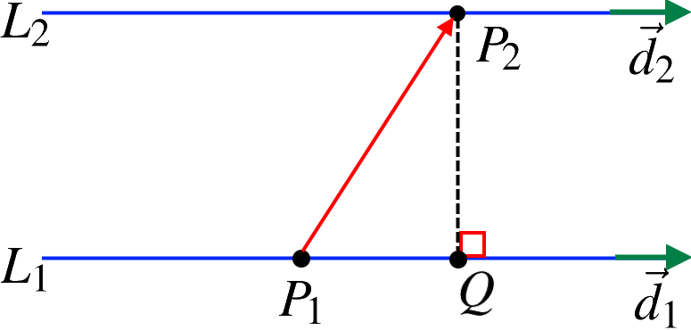

4.9. The Cross Product#
4.9.1. Right Hand System of Vectors#
We say that three vectors \(\vec{u}\), \(\vec{v}\), \(\vec{w}\) form a right-hand system if we align vector \(\vec{u}\) alongside the index finger and align \(\vec{v}\) in the direction of the next finger after the index finger, then the thumb stays in the direction of vector \(\vec{w}\).
{kind=link}
For example, the following vectors form a right-handed system.
{kind=link}
We could also use our left hand and in that case, we could see that the vector \(\vec{w}\) would need to point in the opposite direction (See the following Figure).

4.9.2. Coordinate Vectors#
Unit vectors (vectors with the length of 1) in the directions of the \(x\), \(y\), and \(z\) axes of a three-dimensional Cartesian coordinate system are known as the coordinate vectors.
{kind=link}
The coordinate vectors \(\vec{i}\), \(\vec{j}\), \(\vec{k}\) always forms a right-handed system.
{kind=link}
4.9.3. Geometric Definition of Cross Product#
For two vectors \(\vec{u}\) and \(\vec{v}\) in \(\R^3\). The cross product of \(\vec{u}\) and \(\vec{v}\) is shown with \(\vec{u}\times \vec{v}\) and is defined by the following two rules:
Its length is \(\|\vec{u}\times \vec{v}\| = \|\vec{u}\|\|\vec{v}\|\sin(\theta)\), where \(\theta\) is the included angle between \(\vec{u}\) and \(\vec{v}\).
It is perpendicular to both \(\vec{u}\) and \(\vec{v}\), that is \((\vec{u}\times\vec{v})\bullet \vec{u} = 0\), \((\vec{u}\times\vec{v})\bullet \vec{v} = 0\), and \(\vec{u}\), \(\vec{v}\), \(\vec{u}\times\vec{v}\) form a right hand system.
{kind=link}
The dot product of two vectors results in a scalar (a number) as opposed to the cross product that results in a vector (has direction and magnitude).
The cross product of the coordinate vectors \(\vec{i}\), \(\vec{j}\) and \(\vec{k}\):
Not that a vector \(\vec{u} =\begin{bmatrix}u_1 & u_2 &u_3\end{bmatrix}^T\) can be written in terms of \(\vec{i}\), \(\vec{j}\) and \(\vec{k}\) as \begin{align*}\vec{u}= u_1 \vec{i}+u_2\vec{j}+u_3 \vec{k}.\end{align*}
For two vectors \(\vec{u}= u_1 \vec{i}+u_2\vec{j}+u_3 \vec{k}\) and \(\vec{v} = v_1 \vec{i}+v_2\vec{j}+v_3\vec{k}\), the cross product can be seen as:
We also can express the cross product as the determinant of a matrix,
4.9.4. Properties of the Cross Product#
For three vectors \(\vec{u}\), \(\vec{v}\), and \(\vec{w}\) in \(\mathbb{R}^3\), and scaler \(k\) in \(\mathbb{R}\) scalar, the following properties of the cross product hold.
\(\vec{u}\times \vec{v} = -(\vec{v}\times \vec{u})\), and \(\vec{u}\times \vec{u}=0\),
\((k\vec{u})\times \vec{v} = k(\vec{u}\times \vec{v}) = \vec{u}\times (k\vec{v})\),
\(\vec{u}\times (\vec{v}+\vec{w}) = \vec{u}\times \vec{v}+\vec{u}\times \vec{w}\),
\((\vec{v}+\vec{w})\times \vec{u}=\vec{v}\times \vec{u}+\vec{w}\times \vec{u}\).
Example: Find \(\vec{u}\times \vec{v}\) and \(\vec{v}\times \vec{u}\) for the following vectors \(\vec{u}=\begin{bmatrix} 2\\0\\-2 \end{bmatrix}\) and \(\vec{v}=\begin{bmatrix} 0\\5\\3 \end{bmatrix}\).
Solution:
Example: Let \(A = (0,0,1)\), \(B = (2,0,-1)\) and \(C = (0,1,0)\) be point in \(\mathbb{R}^3\). Find an equation for the plane containing \(A\), \(B\), and \(C\).
Solution:
{kind=link}
The vectors \(\overrightarrow{AB}\) and \(\overrightarrow{AC}\) lie in the plane; therefore,
and
is a normal for the plane (being orthogonal to both \(\overrightarrow{AB}\) and \(\overrightarrow{AC}\)). Since all three points \(A\), \(B\) and \(C\) are on the plane, we can use any of them to write down an equation of the plan. Hence the plane has equation
An important geometrical application of the cross product is as follows. The size of the cross product, \(\|\vec{u}\times \vec{v}\|\), is the area of the parallelogram determined by \(\vec{u}\) and \(\vec{v}\).
{kind=link}
Let \(\vec{u}\) and \(\vec{v}\) be three vectors in \(\mathbb{R}^n\):
Area of a Parallelogram = \(\|\vec{u}\times \vec{v}\| = \|\vec{u}\|\|\vec{v}\|\sin(\theta)\),

Area of a Triangle = \(\dfrac{1}{2}\|\vec{u}\times \vec{v}\| = \dfrac{1}{2}\|\vec{u}\|\|\vec{v}\|\sin(\theta)\).
{kind=link}
where \(\theta\) is the included angle between \(\vec{u}\) and \(\vec{v}\).
Example: Find the area of the parallelogram determined by the vectors \(\begin{bmatrix} 1 & 2 & 3 \end{bmatrix}^T\) , \(\begin{bmatrix} 3 & -2 &1\end{bmatrix}^T\).
Solution: Let \(\begin{bmatrix} 1 & 2 & 3 \end{bmatrix}^T\) and \(\begin{bmatrix} 3 & -2 &1\end{bmatrix}^T\). The area can be found as follows,
Example: Find the area of the triangle having vertices \(A(3,-1,2)\), \(B(1,1,0)\) and \(C(1,2,-1)\).
Solution: The area of the triangle is half the area of the parallelogram defined by \(\overrightarrow{AB}\) and \(\overrightarrow{AC}\).
Therefore,
As a result, the area of the triangle is
If the two vectors \(\vec{u}\) and \(\vec{v}\) are parallel then the angle between them is either \(0\) or \(\pi\) degrees. \(\|\vec{u}\times \vec{v}\| = \|\vec{u}\|\|\vec{v}\|\sin(\theta)\) implies that \(\|\vec{u}\times \vec{v}\|=0\).
\(\vec{u}\) and \(\vec{v}\) are parallel vectors if \(\vec{u}\times \vec{v}=\vec{0}\).
Example: Determine whether \(\vec{u}=\begin{bmatrix} 1&1&-1 \end{bmatrix}^T\) and \(\vec{v}=\begin{bmatrix} 1&0&2 \end{bmatrix}^T\) are parallel.
Solution:
\(\vec{u}\) and \(\vec{v}\) are not parallel.
4.9.5. The Box Product#
Assume that three vectors \(\vec{u}\), \(\vec{v}\), and \(\vec{w}\) in \(\mathbb{R}^3\) that form a parallelepiped. The volume of this parallelepiped is given by:
Note that for two vectors \(\vec{u}= u_1 \vec{i}+u_2\vec{j}+u_3 \vec{k}\) and \(\vec{v} = v_1 \vec{i}+v_2\vec{j}+v_3\vec{k}\) and \(\vec{w} = w_1 \vec{i}+w_2\vec{j}+w_3\vec{k}\), we have
{kind=link}
Note that for three vectors \(\vec{u}= u_1 \vec{i}+u_2\vec{j}+u_3 \vec{k}\), \(\vec{v} = v_1 \vec{i}+v_2\vec{j}+v_3\vec{k}\) and \(\vec{w} = w_1 \vec{i}+w_2\vec{j}+w_3\vec{k}\), we have
Example: Find the volume of the parallelepiped determined by the vectors \(\vec{u}=\begin{bmatrix} 1 & 0 & 0 \end{bmatrix}^T\), \(\vec{v}=\begin{bmatrix} 0 & 1 & 0 \end{bmatrix}^T\) and \(\vec{w}=\begin{bmatrix} 0 & 0 & 1 \end{bmatrix}^T\).
Solution: We have,
An alternative way to get the same result:
Example: Find the volume of the parallelepiped determined by the vectors \(\begin{bmatrix} 1& -7&-5 \end{bmatrix}^T\), \(\begin{bmatrix} 1 & -2 & -6 \end{bmatrix}^T\) and \(\begin{bmatrix} 3 & 2 &3 \end{bmatrix}^T\).
Solution:
Three vectors \(\vec{u}\), \(\vec{v}\), and \(\vec{w}\) in \(\mathbb{R}^3\) are in the same plane if the volume of parallelepiped formed by these vectors is equal to zero.
Example: Determine whether the three vectors \(\begin{bmatrix} 1 & 4 & -7 \end{bmatrix}^T\), \(\begin{bmatrix} 2 & -1 & 4 \end{bmatrix}^T\) and \(\begin{bmatrix} 0 & -9 & 18 \end{bmatrix}^T\) lie in the same plane or not.
Solution:
Example: Given lines \(L_1:~\begin{bmatrix} x\\y\\z \end{bmatrix}=\begin{bmatrix} 2\\ 1\\ -1 \end{bmatrix}+s\begin{bmatrix} 1\\ 1\\ -1 \end{bmatrix}\) and \(L_2:~\begin{bmatrix} x\\y\\z \end{bmatrix}=\begin{bmatrix} 1\\ 2\\ 0 \end{bmatrix}+t\begin{bmatrix} 1\\ 1\\ 1 \end{bmatrix}\), find the shortest distance between them and points \(P_1\) on \(L_1\) and \(P_2\) on \(L_2\) that are closest.
Solution:
{kind=link}
Let \(P_1=(2,1,-1)\) on \(L_1\) and \(P_2=(1,2,0)\) on \(L_2\). It follows that \(\overrightarrow{P_1P_2}=\begin{bmatrix} -1 & 1 & 1 \end{bmatrix}^T\). Moreover, the direction of the \(L_1\) and \(L_2\) are \(\vec{d}_1=\begin{bmatrix} 1 & 1 & -1 \end{bmatrix}^T\) and \(\vec{d}_2=\begin{bmatrix} 1 & 1 & 1 \end{bmatrix}^T\), respectively.
The two lines are not parallel since
Furthermore, let \(\vec{n}= \vec{d_1}\times \vec{d_2}=\begin{bmatrix} 2 & -2 & 0 \end{bmatrix}^T\) and
Therefore,
Example: Find the shortest distance between the following two lines in \(\mathbb{R}^3\) $\( L_1: \begin{cases} x=t+2\\ y=t\\z= t-1 \end{cases} \quad L_2: \begin{cases} x=2\,s+2\\ y=2\,s\\z= 2\,s+2 \end{cases} \)$
Solution:
{kind=link}
Let \(P_1=(2,0,-1)\) on \(L_1\) and \(P_2=(2,0,2)\) on \(L_2\). Therefore, \(\overrightarrow{P_1P_2}=\begin{bmatrix}0 & 0 & 3\end{bmatrix}^T\). Moreover, the directions of the \(L_1\) and \(L_2\) are \(\vec{d}_1=\begin{bmatrix}1 & 1 & 1 \end{bmatrix}^T\) and \(\vec{d}_2=\begin{bmatrix} 2 & 2 & 2 \end{bmatrix}^T\), respectively.
Note that the two lines are parallel since
Therefore,
\(Q\) is a point on \(L_1\) (why!?). Therefore, the shortest distance is the length of \(\overrightarrow{QP_2}\) (or \(\overrightarrow{P_2Q}\))
and
Refrences
Kuttler, Kenneth. “A First Course in Linear Algebra (Lyryx).” (2018).
Nicholson, W. Keith. “Linear Algebra with Applications (Lyryx).” (2018).